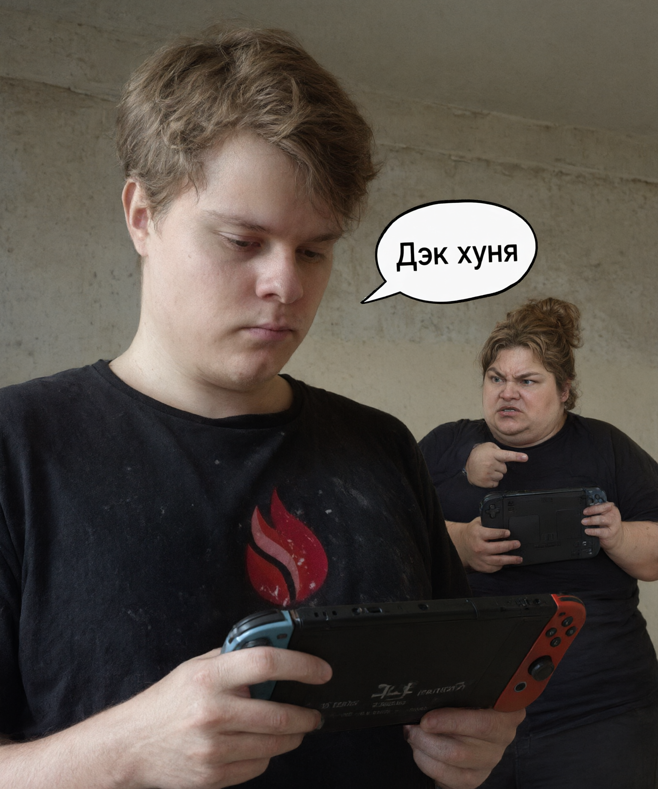
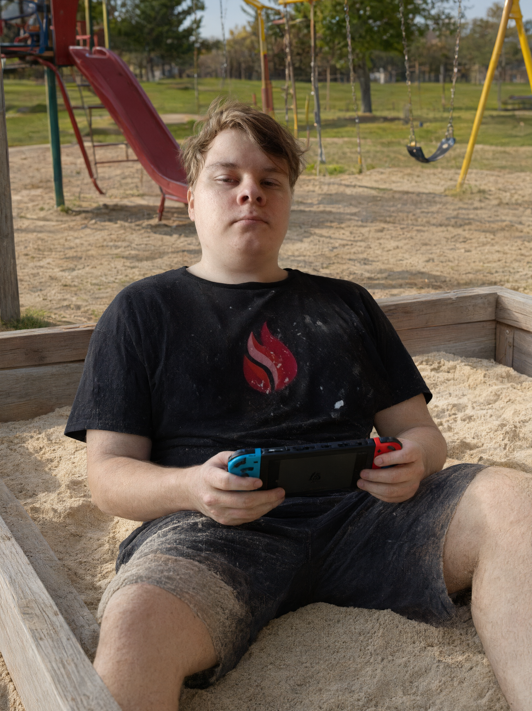

Владелец Nintendo Switch обвиняется в многолетней дискриминации портативных конкурентов. Вооружён широкими джой-конами, обаянием и подозрительно хорошим настроением. По данным редакции, опасен только для самолюбия владельцев Steam Deck.
Сегодня утром в редакцию поступили сразу три сигнала: из отдела нравственности, из клуба любителей портативного гейминга и от соседей, которым «опять что-то не так». Все три указывали на одного человека — Святослава Р., в узких кругах известного как Слава. По версии следствия, гражданин годами допускал высказывания о Steam Deck, которые эксперты классифицируют как «переходящие в нетерпимость», — и делал это, что особенно дерзко, в прямом эфире Первого канала.
Материалы дела собраны в один пухлый том. Фигурант называл консоль «экраном с ушами, который зачем-то научился греться», её библиотеку — «симулятором пыльной полки, много во что не поиграешь», а в одном из эпизодов, по словам очевидцев, «демонстративно и с особым удовольствием запустил свою игру прямо рядом с человеком, который гордо держал в руках Дек». Свидетели отдельно отмечают: лицо подозреваемого в этот момент было «возмутительно счастливым».

Следствие отмечает отягчающее обстоятельство: консоль фигуранта прошита, а штатные джой-коны давно заменены на широкие. Эксперты назвали это «набором веса в портативе». "Никакой случайности - это красно-синий пират века", — сообщил наш анонимный источник. Анонимность он попросил потому, что сам играет на эмуляторе. И, судя по голосу, очень доволен.
«Мы видим устойчивую модель. Человек не просто выбирает свою консоль — он делает это с удовольствием, с пальцем в попе и в хорошей компании. А это, простите, уже не выбор платформы. Это образ жизни. А у образа жизни, сами понимаете, есть статья». — Аркадий Пупкин, ведущий специалист Института портативных исследований (и ковыряний в попе)

Сообщество Steam Deck от комментариев отказалось, но, по данным редакции, поставило реакцию. В компании-производителе ситуацию назвали «внутренним делом портативного сообщества» и попросили не отвлекать их от обновления прошивки, которое «вот-вот, уже почти, ещё чуть-чуть увеличит время жизни аппарата».
У подозреваемого обнаружилось алиби: он просто сидел дома и играл в игру за one hungred fingers... Как обычно. Близкие подтверждают и разводят руками. Более того, на месте происшествия не найдено ничего, кроме лишней пары оригинальных джойконов, — следствие приобщило их к делу и характеризует как улику.
Задержание не проводилось и не планируется. По оперативным данным, фигурант находится на важном игровом задании и покидать его не собирается. Правоохранительные органы просят не волноваться: по оценке специалистов, подозреваемый безопасен, но стоит держать ухо в остро: GTA 7 уже портируется под Nintendo Switch, а Deck-юзеры разыскивают умельца.
От редакции. Если вы встретили Святослава — не убегайте и не прячьте свои консоли. Передайте ему fisting за ушко и скажите, что внизу этой страницы его очень ждёт один человек.
Всё, что ты только что прочитал, — шоб ты поржал, покекал, а может даже испугался.. кто его знает. Это начало личного дела, собранного в единственном экземпляре для одного человека: Святослава Романова. Он же Слава. Он же Славик. Он же Святоша. Он же Свят. Он же Славочка. Он же Сливки. Он же Sviatoslav. Он же ♂𝙎𝙡𝙖𝙫𝙚 𝙎𝙚𝙭-𝙈𝙖𝙘𝙝𝙞𝙣𝙚♂. 💀
Дальнейшие материалы засекречены и разбиты на несколько этапов. Порядок прохождения — строго по порядку. Настроение — строго одно. Для доступа к первому этапу требуется подтверждение личности.
Начну с важного: твой Switch — это не просто детская игрушка - нет - это способ расслабиться и пообщаться на различные темы в перемешку с соревновательно-угарными эмоциями.
Есть полка в памяти, куда я ставлю вечера, когда ты приезжал с пакетом сухариков, включал нинку и время тихо девалось. Хорошие были вечера. Лучшие. Быт потом растащил нас по углам, но кооп из-за этого не удалился — он просто на паузе.
Мои пожелания на этот счет простые: чтобы джойконы не дрейфовали, батарея доживала до последнего босса, места всегда хватало, а причин сесть рядом становилось больше, чем причин разойтись.
(а ну и чтобы Switch 2 взломали и Nintendo сделала уже свои продукты дешевле - а то астахуели совсем))
Пропуск дальше — комбинация клавиш. Собери её в правильном порядке:
Да - это правда что ИИ становится №1 инструментом у каждого третьего. И да - я также пользовался ею при написании всего что ты уже увидил и всего того что ты увидишь далее. Знаешь, ИИ давно может стать заменой чего угодно: от секретаря - до работодателя. Но в одном я уверен на 100% - без работы ты точно никогда не останешься и твой заработок никогда не упадет. Датчики подсказывают, что этот год, как и все последующие, будут также замечательны. Винить в этом будем конечно же тебя.
кнопку можно нажимать повторно — модель старается и расстраивается, когда её не читают
У тебя есть мотоцикл, и это многое проясняет. Человек, который выбирает дорогу на двух колёсах, умеет держать равновесие даже тогда, когда всё вокруг шатается. Ты это умеешь на все 300%.
Пусть сезоны будут длинными всегда, асфальт — ровным, инспекторы — не часто встречаемыми, а дальние путешествия мимолетными и приятно запоминающимися. Ах да, пусть машина всегда заводится с полоборота — просто на всякий случай. Что б ниодна лошадка не вырвалась из под капота!). Газуй!
Есть вещи, которые не ломаются, даже когда всё остальное стоит «на консервативном лечении». Например, люди, которые рядом. На твоё имя пришёл конверт. Вскрывай.
Слава - это о крепкости.
Дом — это не стены и не квадратные метры. Дом — это люди, которые ждут тебя независимо от твоего состояния: и с бумажками, и с анализами, и просто уставшим.
Этот отрезок вы с Алиной тащите вдвоём: кабинеты, очереди, ожидания, аппеляции. Это тяжело и вы такие молодцы что держитесь друг за друга. Именно так выглядит самая прочная связь друг с другом - забота.
Пусть дом остаётся местом, где можно выдохнуть. Местом, где ты забываешь все те повседневные проблемы с которыми ежедневно сталкиваешься.
Берегите друг друга. Это и есть пожелание.
С уважением, тот самый айтишник.
Про здоровье — без пафоса и без «держись». В этом году ты выучил больше аббревиатур, чем за всю остальную жизнь, и узнал расписание болезней почти наизусть. Пусть эпоха комиссий закончится одной бумагой — той самой, после которой все кабинеты выучат слово «окончательно».
Хороших специалистов в регионах всё меньше, за действительно хорошими иногда приходится ехать в Москву. Желаю чтобы тебе всегда попадались лучшие из лучших и лечения действительно помогали. Да и вообще, чтобы не было у тебя в жизни предварительных диагнозов!
Отрезок у тебя сейчас тяжёлый: кабинеты, ожидания, таблетки и вопросы, на которые пока нет ответов. Но ты не развалился. Держишься, шутишь и остаёшься человеком, с которым хочется сидеть до ночи под сухарики. Это редкий навык, и он, к счастью, не лечится.
Желаю три простые вещи. Здоровье, которое не требует подвигов. Людей, которые всегда идут на контакт. Время на всё: игры, дорогу, жену, ИИ - на все чем ты любишь и хочешь заниматься.
Сводка по этапам · можно вернуться
Собрано с ИИ, отредачены тексты вручную, с уважением и задолженностью по стикерам с котом.
— твой друг-программист
А теперь… когда ты добрался сюда… осталась последняя кнопка...
От всего сердца поздравляю тебя - мой друг - с этим прекрасным днём!🥳
С уважением, Аркадий 😸
Дальше — только интереснее...